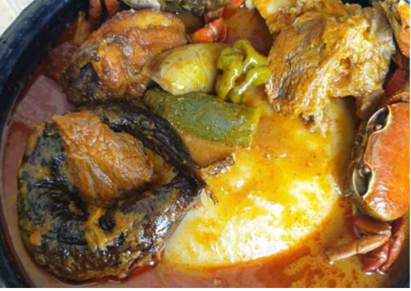

Fufu

Description
Have you wondered how Plantain Fufu is made? Stress not! I'm here to show
you how it's made.
Ingredients
- Cassava
- Plantain
- Soups of any kind
- Fish of any kind
- Meat of any kind
Steps
- Boil the plantain and the cassva: to the texture you prefer
- Prepare the soup: Im no soup expert so all the best!
-
Use a grinder to mix the boiled cassave and plantain or you can use an
African kitchen mortar and pestel
-
Start plating: Intitially put the fufu in the bowl and add the soup
- Don't forget the meat and fish: these are very necessary
PS: I do hope you added salt as you cooked!
Kanpai 🍻 Enjoy 👌